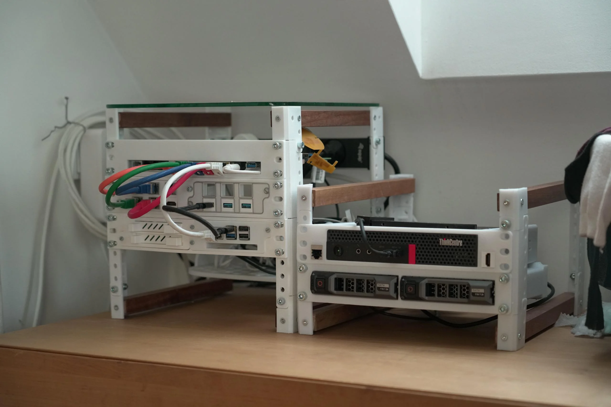

Mein Homelab
Ein tiefer Einblick in meine selbstgehostete Infrastruktur, Hardware-Orchestrierung und lokalen Netzwerkdienste.

Das 10″-Mini-Rack
Platzeffizient, flüsterleise und verlässlich im 24/7-Dauerbetrieb: Mein zentraler Knotenpunkt für Netzwerk und Computing.
Lenovo ThinkCentre m720q
Läuft mit ZimaOS und fungiert als primärer Rechenknoten. Beherbergt zudem die zentralen Speicherlaufwerke.
FritzBox 7590 AX
Übernimmt Firewall-, Routing- und WLAN-Access-Point-Funktionen im Heimnetzwerk.
Raspberry Pi 5 (8 GB)
Fungiert als DNS- und Ad-Blocking-Server sowie als dedizierter Entwicklungs- und Testserver.
Selbstgehostete Dienste
Die meisten Anwendungen laufen isoliert in einer modernen Docker-Umgebung für schnelle Deployments und einfache Wartung.
Immich
MedienErsetzt Google Photos für automatisches Foto-Backup, Albenverwaltung und KI-gestützte Suche.
Jellyfin
StreamingErsetzt proprietäre Streamingdienste für den verlustfreien Zugriff auf meine lokalen Medien.
Nextcloud
CloudErsetzt Microsoft 365 und Google Drive für private Dateiablage, Synchronisation und Kalender.
Nginx Proxy Manager
NetzwerkVerwaltet SSL-Zertifikate, Reverse-Proxies und das Routing lokaler Domain-Anfragen.
Cloudflare Tunnels
SicherheitGibt spezifische Dienste sicher ohne offene Router-Ports nach außen frei und nutzt bewährten DDoS-Schutz.
Docker-Architektur
KernsystemDie schlanke Virtualisierungsebene für flexible Container-Orchestrierung und schnellen Hardware-Zugriff.